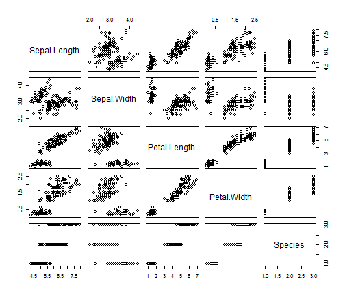

My First Test
HTML5 slides
JPN
Plot Eg
You can use Latex's typesetting \[\sum_{i=0}^n x_i\]
A Simple Plot
Let us create a simple scatterplot.
require(ggplot2)
qplot(wt, mpg, data = mtcars)

A Table
library(xtable)
Error: there is no package called 'xtable'
options(xtable.type = "html")
xtable(head(mtcars))
Error: could not find function "xtable"
Animated List
- Point 1
- Point 2